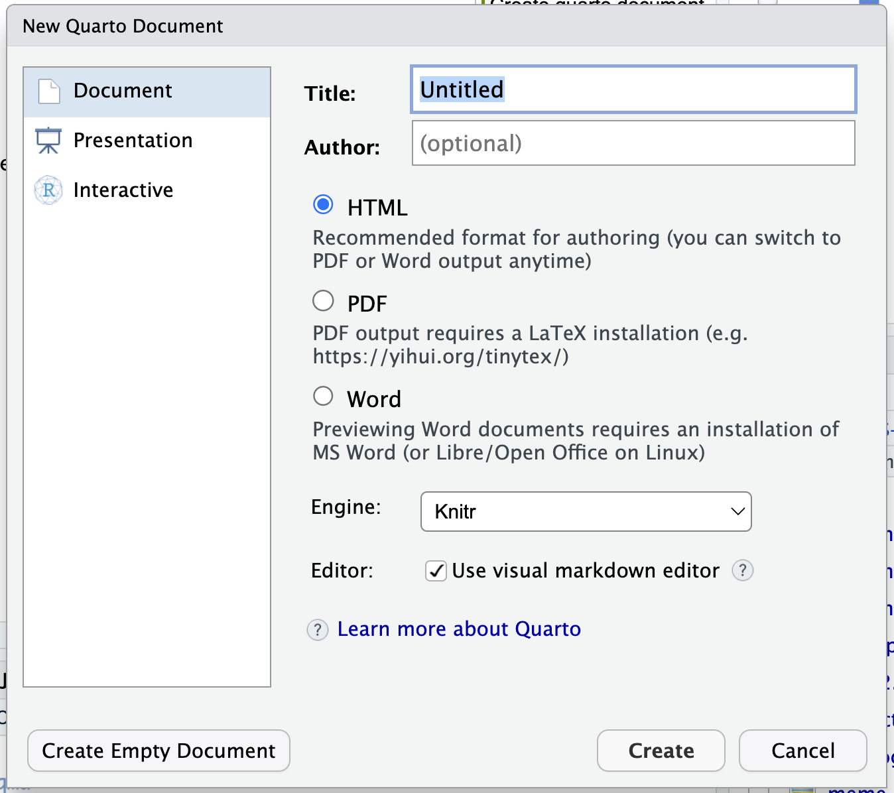

[1] 8.3333332026-11-09
Quarto is a free tool for creating documents from a plain-text source file. You can combine writing, code, and the results of that code in one place.
Use the same source to create reports, presentations, websites, and more. Quarto works with R, Python, Julia, and Observable.
We will use R and return to the practical project. By the end, you will have a report that updates when we replace its input data.
You write your content in a .qmd file. When you render it, Quarto runs the code, adds its output to your writing, and creates the finished document.
That makes it easier to update a report when the data changes: update the data, render again, and the numbers and figures are refreshed from the code.
Open practical.Rproj. In RStudio, choose File → New File → Quarto Document….
Choose HTML, give it a title, and save it as my-report.qmd in the project root, beside practice.R. Use the Source editor when typing the Markdown examples below.
If the Quarto option is missing or RStudio asks to install a required package, ask for help before continuing.

Start with HTML and click Render. Quarto will create a document you can open in your browser.
docx and rendering again.The writing and code stay in the .qmd source. You can render it again whenever you update the content or data.
Make changes in the .qmd file and render again. Changes made only in the output will not be carried back into your source.
Save my-report.qmd before rendering. Keep the setup and analysis code in the document so someone else can recreate the report.
A .qmd file has two main parts:
---. This is YAML and stores settings such as the title and output format.This is the same Markdown we used in GitHub’s README. For example:
Render the document and see how the source becomes a formatted page.
Use RStudio’s Insert Code Chunk control to insert an R chunk. Paste this code inside it, then render:
The code and its result are connected: change the values and render again to update the result.
In the Source editor, an executable R chunk has an opening line, the R code, and a closing line:
```{r}
scores <- c(7, 8, 10)
mean(scores)
```The three backticks mark the boundaries. {r} says to run the contents as R code. Ordinary writing goes outside the chunk.
You can use the chunk’s green arrow to try it, but Render rebuilds the whole document.
echo, eval, message, and warning
These options control what happens to code chunks:
echo: show (TRUE) or hide (FALSE) the code in the rendered document.eval: run (TRUE) or skip (FALSE) the code.message and warning: show or hide messages and warnings produced by the code.Set options in the chunk header. For example, this runs the summary and shows its result while hiding its code and messages:
```{r, echo=FALSE, message=FALSE}
summary(scores)
```Use echo=FALSE when you want results without the code. eval=FALSE means the code will not run, so it cannot create objects for later chunks.
Add an execute: section to the YAML at the top of your document. These defaults run the code but hide it in the output:
---
execute:
echo: false
eval: true
---Keep your existing title and format. Add these options inside the same YAML block, keeping the indentation shown above. Individual chunks can override the defaults.
When you click Render, Quarto runs your document from the top in a fresh session. Objects you created only in the Console are not automatically available.
Include the library() calls, file-reading code, and calculations in your .qmd file, in the order they are needed.
If you see object not found, look for the earlier chunk that should create it. Check that it runs and that the object name is the same in both places.
YOUR TURN Get the datadata1.csv in practical/data.These are made-up prevalence percentages for five conditions. Each row describes a database, condition, year, and prevalence. For example, 8.4 means 8.4%.
In my-report.qmd, add an R chunk and paste this code. Keep it above the chunks that use data:
Render and check the column names. If the file cannot be found, check its name and make sure it is in this project’s data folder.
Add another R chunk below the data-reading chunk. Here we find the row with the highest prevalence across all years and databases:
max() finds the largest value; filter() keeps matching rows. This example dataset has one highest row. With other data, ties could give us several rows.
Below the previous chunk, paste this sentence as ordinary document text. The expressions between backticks are inline R:
The highest prevalence is `r highest_example$prevalence`%
for `r highest_example$condition`
in `r highest_example$database` in `r highest_example$year`.Render the document. Quarto replaces each inline expression with its value, so the text updates with the data too.
Here, $ selects a column from highest_example, just as we used people$age in the R session.
Add one more R chunk:
As before, aes() connects columns to the axes and colours. facet_wrap() creates a separate panel for each database.
YOUR TURN: change the plot title or hide the code with echo=FALSE, then render again.
Leave a blank line in the source to start a new paragraph. Extra empty lines in the source do not add extra space in the output.
To add a blank line in your Word report, put (a non-breaking space) on its own line, with a blank line before and after it:
To insert a page break in Word, put this shortcode on its own line, with a blank line before and after it:
Text before the page break.
{{< pagebreak >}}
Text on the next page.A template gives documents a shared look and saves you from formatting every report by hand. For a Word report, a reference document can define headings, fonts, spacing, headers, footers, and caption styles.
Quarto uses the content and styles in your .qmd file; Word uses the matching styles in the reference document to decide how those parts look.
The darwinReportRef.docx template is an example of a Word reference document.
On GitHub, use Download raw file to save the .docx file, then open it in Word to explore the styles. Save it beside my-report.qmd.
Replace your existing format: setting in the YAML with:
You can give a block of text a style name that exists in the Word reference document:
Create or change the FigureCaption and CaptionFooter styles in the Word template to control their appearance. The style names in the document and template need to match.
YOUR TURN Update the reportA new partner, SIDI Or, sends results at the last minute. SIDI Plata updates its results, while SIDI Bronze stays the same. Let’s refresh our report:
data2.csv in your data folder.read_csv() line to read data2.csv.The report is refreshed from the new data. Check what changed for SIDI Plata, notice the new SIDI Or results, and confirm that SIDI Bronze stayed the same.
library() calls in the document, above the analysis.data folder, and the exact filename.format: key.Fix the first reported error and render again. Ask for help if the message does not make sense.
.qmd source.That’s Quarto: write it once, render it when you need it, and let the code update the results.
Save my-report.qmd in practical. Next, OmopStudyBuilder will help us organise a bigger study into a shared repository.